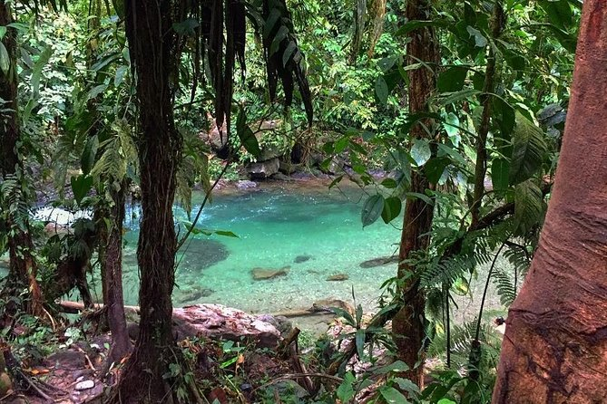
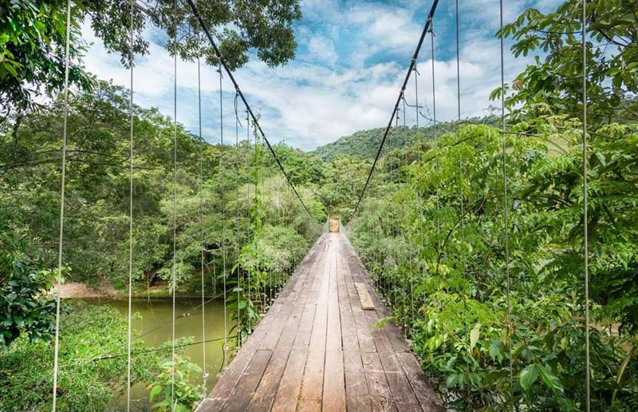
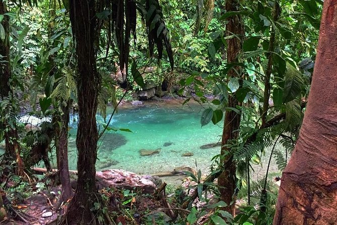
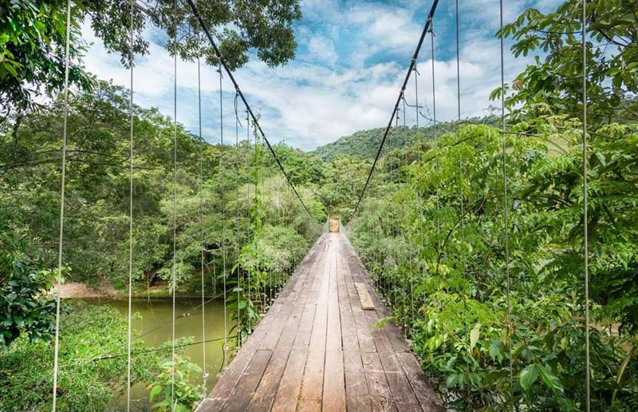

Reserva Natural El Danubio
 



Descubre la Reserva Natural El Danubio, un ecosistema protegido que resguarda la riqueza de la biodiversidad colombiana. Este refugio ecológico es el hogar de numerosas especies de flora y fauna, muchas de las cuales son raras o amenazadas. Ideal para ecoturismo, la reserva te ofrece la oportunidad de realizar caminatas por senderos rodeados de naturaleza exuberante y participar en actividades de avistamiento de aves. El Danubio es un lugar donde la belleza natural se encuentra con la conservación, brindándote una experiencia educativa y enriquecedora.